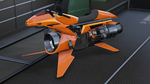
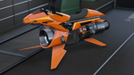

Lampadati
Una empresa italiana de coches de lujo fundada en Polonia a principios del siglo XX y que se dedicó a los coches de carreras. Tras no conseguir ganar muchos grandes premios, se centraron en fabricar coches deportivos que impresionan a las mujeres casquivanas. Esto si que lo han conseguido. Y muy bien por cierto.
Windsor
Al desdibujar los límites entre un automóvil y una mansión de un aristócrata inglés, este coche podría darle un aura de clase y buen gusto hasta a un fan del nu metal. El inútil fabricante creó una aerodinámica tan patética y un chasis tan pesado que este motor de doble turbo apenas da para manejar despacio mientras eliges a una prostituta, pero eso es parte de (o todo) su encanto británico.
Zion Cabrio
Ingeniería y diseño alemanes tomados muy, muy en serio. Se garantiza que este modelo de Zion descapotable le levantará el peluquín a cualquier ejecutivo sénior.